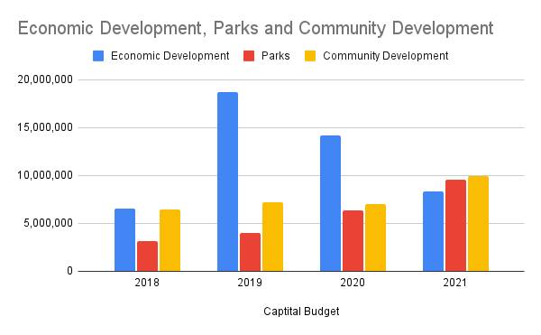

Timeline photos
I am working on making a spreadsheet of the @[100064805494040:2048:City of Akron, Ohio - Mayor's Office] budget because our mayor won't do it.
It's super fascinating. For example:
I am just as curious why our mayor keeps jacking up the annual budget for parks while simultaneously cutting the economic development budget. I made a chart to show you what I mean.
The spreadsheet is a work in progress. But you can check it out here:
https://docs.google.com/spreadsheets/d/1hrL9hU_4OVo9pHY3-ufIp6_e037RmfUbCT6YWUzpRC8/edit?usp=sharing